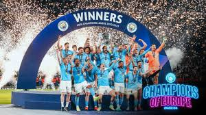

I have been a loyal fan for 13 years and I have always supported the team through thick and thin. I have seen them win many trophies and I am proud to be a part of the Mancity family. I will continue to support them no matter what and I hope to see them win more trophies in the future. My favorite player is Phil Foden. He is an amazing midfielder and is born in Manchester. A home grown Talent.